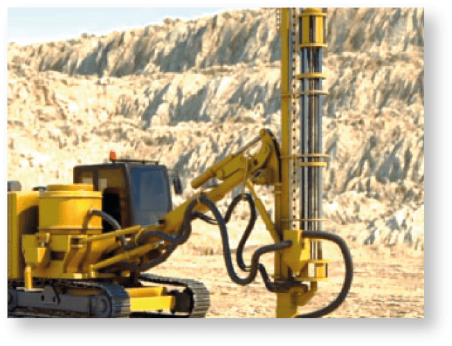
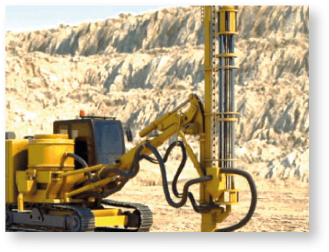
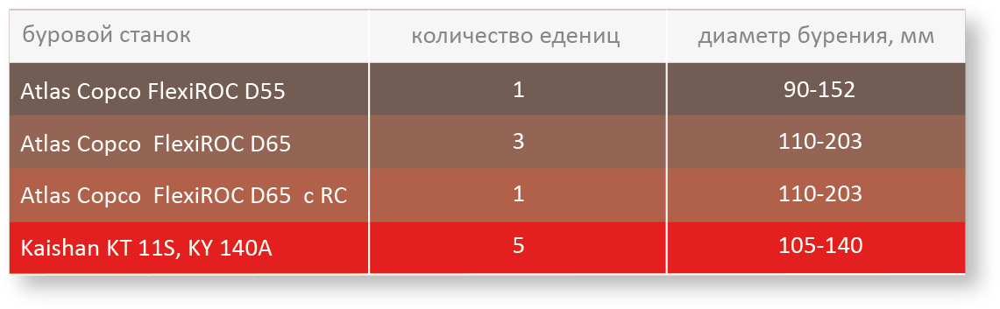
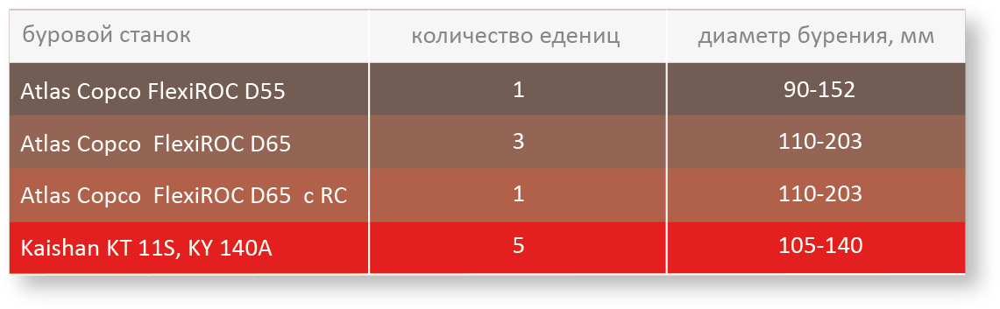

1. расчет производительности
2. определение объемов и места работ на
планируемый период
планируемый период
3. линейный надзор за ведением горных работ
с соблюдением техники безопасности
с соблюдением техники безопасности
4. проведение необходимых работ на отвальном участке
 
